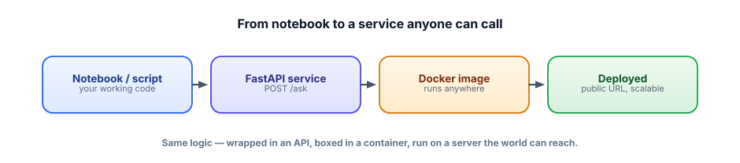

From notebook to a service
A model call in a notebook helps exactly one person: you. To let anyone — a website, an app, a teammate — use it, you wrap it in a small web service. This lesson turns your working code into an API others can call.
Why an API is the unlock
Your capstone works in a Python file on your laptop. But a product isn’t a script someone has to run — it’s something other software can talk to over the network. A web service (or API) is a program that listens for requests and sends back responses. Wrapping your model logic in one means a front-end, a mobile app, or another service can send a question and get an answer, without knowing or caring about the Python inside. This single step — “put it behind an endpoint” — is what turns “I built a thing” into “others can use my thing,” and it’s the first thing an interviewer means by “productionize.”

A model service in ~15 lines
We’ll use FastAPI, the standard, beginner-friendly Python web framework for this. It’s free, and paired with a local model (Ollama) the whole thing costs nothing to run. The idea: define an endpoint — a URL path like /ask — and a function that runs when someone POSTs to it.
from fastapi import FastAPI
from pydantic import BaseModel
import ollama # your free, local model
app = FastAPI()
class Ask(BaseModel): # defines the shape of the request body
question: str
@app.post("/ask")
def ask(body: Ask):
reply = ollama.chat(model="llama3.2",
messages=[{"role": "user", "content": body.question}])
return {"answer": reply["message"]["content"]}Run it with uvicorn main:app --reload, and you have a live service. Anyone on your machine can now POST a question:
curl -X POST localhost:8000/ask \
-H "Content-Type: application/json" \
-d '{"question": "What is RAG in one sentence?"}'
# -> {"answer": "RAG retrieves relevant documents and ..."}Two beginner-friendly wins come for free with FastAPI: the Ask model (from pydantic) automatically validates incoming requests — a request missing question gets a clear 422 error, not a crash — and FastAPI auto-generates interactive docs at /docs so you can try your endpoint in the browser.
The body of ask() is just your capstone logic (RAG, an agent, text-to-SQL). Productionizing doesn’t change what your code does — it changes how it’s reached: from “run the script” to “call the endpoint.”
- A web service (API) lets other software use your model logic over the network — the core of “productionize.”
- FastAPI wraps your code in endpoints (e.g.
POST /ask) in a handful of lines; run it with uvicorn. - pydantic models validate requests automatically (clear errors, not crashes);
/docsgives you a free test UI. - The endpoint body is just your existing logic — productionization changes access, not behavior.
- It stays free/local with Ollama; no keys or bills to stand it up.
Sketch how you’d turn your Track 14 RAG assistant into a service. What would the endpoint be, what fields would the request and response have, and what should happen if the request is missing the question?
▸ Show solution & reasoning
Endpoint: POST /ask. Request: a JSON body with question (string), optionally top_k (how many chunks to retrieve). Response: { "answer": "...", "sources": [...] } — returning the sources is your RAG grounding/citations coming through the API, so callers can verify. Missing question: a pydantic model with a required question field makes FastAPI reject it automatically with a 422 and a message naming the missing field — no crash, no ambiguous 500.
Why this shape: it exposes exactly what a caller needs (a question in, an answer plus sources out) and nothing about the internals (which vector store, which model). That clean contract is what lets you swap the implementation later — a bigger model, a different retriever — without breaking any caller. Returning sources also carries your grounding discipline all the way to the edge of the system, which is what makes the service trustworthy, not just functional.
What does wrapping your model code in a FastAPI endpoint fundamentally change?
Once your logic is an endpoint, a few realities specific to LLM services show up quickly, and knowing them marks you as someone who’s shipped. First, latency is high and variable — a model call can take seconds, so you’ll often want asynchronous handling and streaming (Track 8): sending tokens as they’re generated so the user sees progress instead of a long blank wait.
FastAPI supports streaming responses, and it dramatically improves perceived speed. Second, these endpoints are expensive per call compared to a typical CRUD API, so timeouts, caching (Track 8), and per-user rate limits aren’t niceties — they’re how you avoid a surprise bill or an outage from one heavy user.
Third, and easy to forget: the endpoint is now an attack surface. Everything from Track 7 applies at the API boundary — validate and bound inputs, guard against prompt injection in whatever text you accept, never trust the client, and don’t leak internal errors in responses. A production LLM service is your model logic plus a ring of operational concerns — latency, cost, and safety — wrapped around it. The rest of this track is about building that ring: packaging it to run anywhere, gating changes with evals, and watching it in production.
Your service runs on your laptop. To run it anywhere — reliably, the same every time — you package it. Next: containers and deployment.